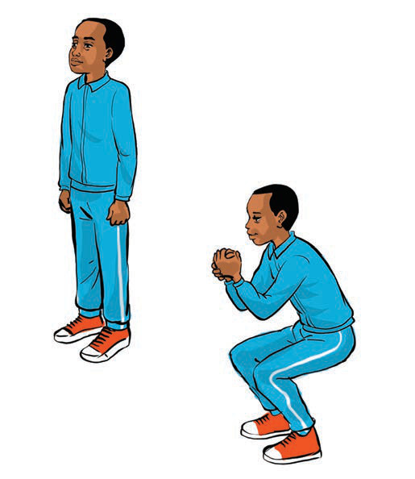

Strength exercises
Strength exercises provide different challenges to the muscles and other body systems. There are various physical exercises that help to build strength. These exercises include squats, high knees, push-ups and planks.
(a) Squats
This exercise strengthens the legs and hip muscles. Therefore, it helps the players to be stable when competing with opponents.
How to do squats:
- Stand upright, legs slightly apart;
- Slowly bend your knees while lowering your body as if sitting in a chair; and
- Stand up again and repeat 10 to 15 times for 3 sets, by following steps (i-ii) as shown in Figure 1.
